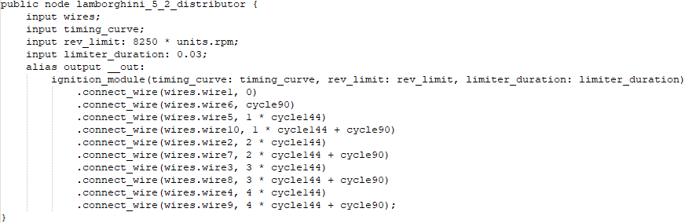
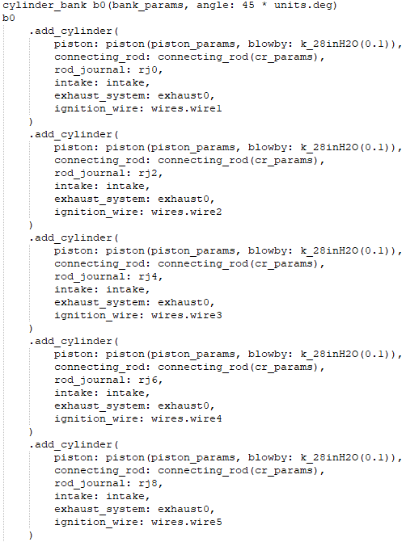
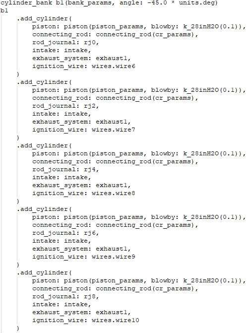

The structure of an engine file
Calling files
This right here is how every engine file starts. By importing engine_sim.mr, calling units aswell as constants.
The impulse library also gets loaded.
Everything I am going to show here just like this CANNOT be excluded or it will NOT work.
Labels
Directly after calling these files u want to declare your labels, labels are basically variables as far as I understand and they simplify making neccesary calculations.
Distributor

The distributor as its name suggests distributes sparks between the cylinders.
Wires
Wires is just a declaration of the ignition wires.
Sym Sample
I am not sure what this is but my guess is that it is how the audio synthesizing is sampled(?)
Lobe Profiles
This is where the degrees for your cams can be set.
Camshaft
The camshaft is where u can set lobe seperation, ignition advance/retardation, base radius of the camshaft etc.
Once again labels have to be declared here as it cant accesss the labels that were declared earler.
The camshaft is mainly where u set every individual cam lobe that has to follow your engines firing order.
Flow Sample
Flow Sample is just a declaration for flow samples.
Engine Head
This is where the flow samples come into play, this is where u can tune the flow of fuel in the intake. I dont know much exactly how this works but basically higher number = more power.
Intake
This is your intake, the intake also includes the "carburetor" so u can change its parameters here. Plenum size and idle throttle position can be changed here too aswell as other things.
Main Engine
This is where the engine "starts". U can change the engine name, redline, starter speed and torque + u can also change fuel parameters here.
Wires below just tells the engine to use the wires that are already declared.
Crankshaft
Just all the parameters for your crankshaft.
Rod Journals

Your rod journals and their angles get declared here.
Pistons
Parameters for your pistons.
Connecting Rods

Parameters for your connecting rods.
Cylinder Bank Parameters
Parameters for your cylinder bank/s.
Intake
Same as before its just using the same intake but changing its variables.
Exhaust
Exhaust System aswell as audio for the exhaust system at the bottom. Volume, flow rate, tube length and velocity decay can be set here.
Dont touch the audio part for now OK.
Cylinder Banks


If u have an inline engine u would only have 1 cylinder bank but this is a V engine so it has 2. All your cylinders are right here.
This is just telling the engine that u have these 2 cylinder banks and a crankshaft.
Harmonic Cam Lobe
I actually dont know what this is, But judging by its name I would guess its an extra cam lobe that is harmonic to the rest. Meaning it has a relation opposite of the other cam lobes. Idk im clueless.
This tells the engine to use the lobe profiles from earlier and the cylinder head on both cylinder banks.
Timing Curve
This is the timing curve of your ignition. This can make u alot of power.
Ignition Module
This just tells the engine to use the distributor from earlier.